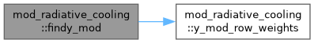
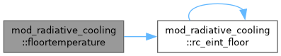
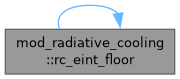
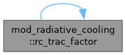
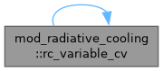

module radiative cooling – add optically thin radiative cooling More...
Data Types | |
| interface | get_subr1 |
| interface | get_2var_subr |
| interface | local_rho2_factor_subr |
| Optional local multiplier for density-squared radiative losses. More... | |
| interface | eos_scalar2_func |
| Scalar EoS inverse, e.g. fleint_from_T(log_nH, log_T). More... | |
| type | rc_fluid |
Functions/Subroutines | |
| subroutine | radiative_cooling_rho2_factor (ixil, ixol, w, x, fl, factor) |
| subroutine | radiative_cooling_init_params (phys_gamma, he_abund) |
| Radiative cooling initialization. | |
| subroutine | voigt_escape_init_table () |
| Build the Voigt escape probability lookup table. Called once (guarded by voigt_table_ready flag). Uses 64-point Gauss-Legendre quadrature on [0, x_max] to evaluate E(tau_0) = (2 phi(0)/tau_0) * integral_0^{x_max} [1-exp(-tau_0 g(x))] dx where g(x) = phi(x)/phi(0) for the Voigt profile H(a,x) truncated at x_max. | |
| double precision function | voigt_profile_ratio (a, x) |
| Voigt profile ratio phi(x)/phi(0) using Humlicek (1982) Region I/II approx. For the small-a regime (a < 0.01), this simplifies to: H(a,x)/H(a,0) ~ exp(-x^2) + a*sqrt(pi)/x^2 for |x| > ~2 We use the exact Gaussian core + Lorentzian wing decomposition. | |
| double precision function | voigt_escape_lookup (tau) |
| Look up the Voigt escape probability for a given tau. Uses linear interpolation in log10(tau) space. | |
| subroutine | voigt_gauss_legendre (a, b, n, x, w) |
| Gauss-Legendre quadrature nodes and weights on [a,b]. Uses the Golub-Welsch algorithm for n points. | |
| subroutine | radiative_cooling_init (fl, read_params) |
| subroutine | create_y_ppl (fl) |
| subroutine | getvar_cooling (ixil, ixol, w, x, coolrate, fl) |
| subroutine | getvar_cooling_exact (qdt, ixil, ixol, wct, w, x, coolrate, fl) |
| subroutine | radiative_cooling_add_source (qdt, ixil, ixol, wct, wctprim, w, x, qsourcesplit, active, fl) |
| subroutine | floortemperature (qdt, ixil, ixol, wct, w, x, fl) |
| double precision function | rc_trac_factor (fl, ixd, te_val) |
| TRAC factor (T/Tcoff)^(5/2) of the losses below Tcoff, and 1 without TRAC or where a user TRAC mask switches the scaling off. | |
| logical function | rc_variable_cv (fl, t1, t2) |
| True where ionisation buffers the cooling step, so that c_V varies: a large change of T below the temperature above which c_V is constant. | |
| double precision function | rc_eint_floor (fl, log_nh, nh_val) |
| Internal energy per volume at the floor temperature tlow, ionisation included. | |
| subroutine | radiative_cooling_taper (ixd, x_ndim, rho_val, te_val, rf_val, fl, factor) |
| subroutine | get_cool_equi (qdt, ixil, ixol, wct, w, x, fl, res) |
| subroutine | cool_exact (qdt, ixil, ixol, wct, wctprim, w, x, fl) |
| subroutine | calc_l_extended (tpoint, lpoint, fl) |
| double precision function | lowfip_fraction (tpoint, fl) |
| subroutine | findl (tpoint, lpoint, fl) |
| subroutine | findy (tpoint, ypoint, fl) |
| subroutine | findt (tpoint, ypoint, fl) |
| subroutine | finddldt (tpoint, dlpoint, fl) |
| subroutine | build_y_mod_table (fl) |
| =================================================================== | |
| double precision function | simpson_composite (f, n, h) |
| Composite Simpson's rule on (N+1) equally spaced samples (N even). N must be a positive even integer; h is the step size. | |
| double precision function | boole_composite (f, n, h) |
| Composite Boole's rule on (N+1) equally spaced samples (N a multiple of 4). Each 4-step block contributes (2h/45)*(7 f0 + 32 f1 + 12 f2 + 32 f3 + 7 f4). | |
| double precision function | invert_row_bisect (y_row, t_grid, ncool, y_target) |
| Bisection on a single Y_mod row to find log10(T) such that Y_mod_row(i) = y_target. The row is monotonically increasing in decreasing i (since Y(ncool)=0 grows toward Y(1)=Y_max). Returns log10 T (code units). | |
| double precision function | findy_mod (te_loc, nh_loc, fl) |
| Forward Y_mod lookup in (log10 nH, log10 T), both axes uniform in log space; along nH the product nH*Y is interpolated (Y_mod_row_weights). | |
| double precision function | findt_mod (y_target, nh_loc, fl) |
| Inverse Y_mod lookup: given Y_target and nH, return T such that Y_mod(log10 nH, log10 T) = Y_target. Bisection on the cooling-table i index using values interpolated between the two adjacent nH rows with the nH*Y weights of Y_mod_row_weights. Saturates at the table extremes when Y_target falls outside [Y(tcoolmax), Y(tcoolmin)]. | |
| subroutine | y_mod_row_weights (fy, fl, wlo, whi) |
| weights between the nH rows jy and jy+1: nH*Y is interpolated linearly in log10 nH, exact for Y ~ 1/nH (fully ionised), where interpolating Y itself overestimates it | |
Variables | |
| double precision, public | lb_cool_accum = 0.0d0 |
| Per-rank cooling-only compute accumulator for lb_diagnose. Sums the wall time spent inside radiative_cooling_add_source across all blocks and substages within one full advance() call. Reset by mod_advance::advance at the start of each step. Note: this is a subset of lb_compute_accum (which already encloses the whole advect1 block loop); it isolates the cooling Newton/exact-solver kernel cost from the surrounding finite-volume work. | |
| double precision, parameter | rc_t_ymod_max_k = 2.0d5 |
| Temperature in K above which c_V is constant, the upper end of the Y_mod path. | |
Detailed Description
module radiative cooling – add optically thin radiative cooling
only uses the (Townsend) exact integration method, can be used in HD, ffhd, MHD, twofl
Assumptions: full ionized plasma dominated by H and He, ionization equilibrium Formula: Q=-n_H*n_e*f(T), positive f(T) function is pre-computed and tabulated or a piecewise power law Uses the various cooling tables stored in mod_radloss_tables.t
Function/Subroutine Documentation
◆ boole_composite()
| double precision function mod_radiative_cooling::boole_composite | ( | double precision, dimension(0:n), intent(in) | f, |
| integer, intent(in) | n, | ||
| double precision, intent(in) | h ) |
Composite Boole's rule on (N+1) equally spaced samples (N a multiple of 4). Each 4-step block contributes (2h/45)*(7 f0 + 32 f1 + 12 f2 + 32 f3 + 7 f4).
Definition at line 2038 of file mod_radiative_cooling.t.
◆ build_y_mod_table()
| subroutine mod_radiative_cooling::build_y_mod_table | ( | type(rc_fluid), intent(inout) | fl | ) |
===================================================================
Variable-c_V Townsend extension (Y_mod)
The original Townsend (2009) exact integration scheme assumes a constant heat capacity c_V = rhoR/(gamma-1). For LTE plasmas with H/He ionisation, c_V is a strong function of temperature in the recombination zone, where ionisation buffers the cooling
The derivation defines a modified TEF Ytilde(T; rho) = int _T^{T_ref} c_V(T'; rho) / (n_H n_e(T'; rho) Lambda(T')) dT' with c_V the LTE volumetric heat capacity including the ionisation-energy reservoir. The integral is recast via the change of variables u = e_int/n_H so that the discrete construction never finite-differences c_V - both integrand and energy update are driven by the same eint_from_T table, guaranteeing bit-consistent energy conservation.
Must be called after eos_finalise() so that eoseint_from_T, eosT (forward), and eosneOnH are all in code units. The hook is bind_eos_to_source() in mod_hd_eos.t / mod_mhd_eos.t.
Algorithm: change of variables from T to u = e_int/n_H. For each log10 nH grid point j (taken from the eoseint_from_T table's nH axis):
- Cache u_i = e_int/n_H at every cooling-curve T_i.
- Walk i = ncool-1 down to 1 and accumulate Y_mod(j, i) = Y_mod(j, i+1) + int _{u_i}^{u_{i+1}} du / (n_e Lambda) using a composite Simpson (3-point, O(h^4)) or Boole (5-point, O(h^6)) rule with N_sub sub-intervals.
- The integrand evaluates n_e via y_from_nH_eint and Lambda via findL (with T from T_from_nH_eint).
Per-row inverse table T_mod_inv(j, k) is also built for the 'table' inverse method (alternative to bisection).
Definition at line 1861 of file mod_radiative_cooling.t.

◆ calc_l_extended()
| subroutine mod_radiative_cooling::calc_l_extended | ( | double precision, intent(in) | tpoint, |
| double precision, intent(out) | lpoint, | ||
| type(rc_fluid), intent(in) | fl ) |
Definition at line 1633 of file mod_radiative_cooling.t.
◆ cool_exact()
| subroutine mod_radiative_cooling::cool_exact | ( | double precision, intent(in) | qdt, |
| integer, intent(in) | ixi, | ||
| integer, intent(in) | l, | ||
| integer, intent(in) | ixo, | ||
| l, | |||
| double precision, dimension(ixi^s,1:nw), intent(in) | wct, | ||
| double precision, dimension(ixi^s,1:nw), intent(in) | wctprim, | ||
| double precision, dimension(ixi^s,1:nw), intent(inout) | w, | ||
| double precision, dimension(ixi^s,1:ndim), intent(in) | x, | ||
| type(rc_fluid), intent(in) | fl ) |
Always compute the CLASSICAL Townsend advance first. This gives Tlocal2 using the same path as ionE=false. If the resulting dT is small (saturated y region), the classical kinetic form is exact and we're done. If dT is large (recombination zone), we redo the advance with the Y_mod path to capture variable-c_V dynamics from ionisation buffering.
Upgrade to Y_mod only in the recombination zone (large dT). Guard: if findY_mod overflows (cooling curve near-zero at this T), keep the classical result – variable c_V is irrelevant where Lambda ~ 0.
Recombination zone: use table-based de for variable c_V.
Saturated y or non-ionE: classical Townsend kinetic form.
Definition at line 1465 of file mod_radiative_cooling.t.

◆ create_y_ppl()
| subroutine mod_radiative_cooling::create_y_ppl | ( | type(rc_fluid) | fl | ) |
Definition at line 1000 of file mod_radiative_cooling.t.
◆ finddldt()
| subroutine mod_radiative_cooling::finddldt | ( | double precision, intent(in) | tpoint, |
| double precision, intent(out) | dlpoint, | ||
| type(rc_fluid), intent(in) | fl ) |
Definition at line 1785 of file mod_radiative_cooling.t.
◆ findl()
| subroutine mod_radiative_cooling::findl | ( | double precision, intent(in) | tpoint, |
| double precision, intent(out) | lpoint, | ||
| type(rc_fluid), intent(in) | fl ) |
Definition at line 1675 of file mod_radiative_cooling.t.
◆ findt()
| subroutine mod_radiative_cooling::findt | ( | double precision, intent(out) | tpoint, |
| double precision, intent(in) | ypoint, | ||
| type(rc_fluid), intent(in) | fl ) |
Definition at line 1738 of file mod_radiative_cooling.t.
◆ findt_mod()
| double precision function mod_radiative_cooling::findt_mod | ( | double precision, intent(in) | y_target, |
| double precision, intent(in) | nh_loc, | ||
| type(rc_fluid), intent(in) | fl ) |
Inverse Y_mod lookup: given Y_target and nH, return T such that Y_mod(log10 nH, log10 T) = Y_target. Bisection on the cooling-table i index using values interpolated between the two adjacent nH rows with the nH*Y weights of Y_mod_row_weights. Saturates at the table extremes when Y_target falls outside [Y(tcoolmax), Y(tcoolmin)].
Definition at line 2136 of file mod_radiative_cooling.t.
◆ findy()
| subroutine mod_radiative_cooling::findy | ( | double precision, intent(in) | tpoint, |
| double precision, intent(out) | ypoint, | ||
| type(rc_fluid), intent(in) | fl ) |
Definition at line 1700 of file mod_radiative_cooling.t.
◆ findy_mod()
| double precision function mod_radiative_cooling::findy_mod | ( | double precision, intent(in) | te_loc, |
| double precision, intent(in) | nh_loc, | ||
| type(rc_fluid), intent(in) | fl ) |
Forward Y_mod lookup in (log10 nH, log10 T), both axes uniform in log space; along nH the product nH*Y is interpolated (Y_mod_row_weights).
Definition at line 2100 of file mod_radiative_cooling.t.

◆ floortemperature()
| subroutine mod_radiative_cooling::floortemperature | ( | double precision, intent(in) | qdt, |
| integer, intent(in) | ixi, | ||
| integer, intent(in) | l, | ||
| integer, intent(in) | ixo, | ||
| l, | |||
| double precision, dimension(ixi^s,1:nw), intent(in) | wct, | ||
| double precision, dimension(ixi^s,1:nw), intent(inout) | w, | ||
| double precision, dimension(ixi^s,1:ndim), intent(in) | x, | ||
| type(rc_fluid), intent(in) | fl ) |
Definition at line 1208 of file mod_radiative_cooling.t.

◆ get_cool_equi()
| subroutine mod_radiative_cooling::get_cool_equi | ( | double precision, intent(in) | qdt, |
| integer, intent(in) | ixi, | ||
| integer, intent(in) | l, | ||
| integer, intent(in) | ixo, | ||
| l, | |||
| double precision, dimension(ixi^s,1:nw), intent(in) | wct, | ||
| double precision, dimension(ixi^s,1:nw), intent(inout) | w, | ||
| double precision, dimension(ixi^s,1:ndim), intent(in) | x, | ||
| type(rc_fluid), intent(in) | fl, | ||
| double precision, dimension(ixi^s), intent(out) | res ) |
Always classical Townsend first. Upgrade to Y_mod only in the recombination zone (large dT) - saturated y uses the identical formula as ionE=false, removing per-substep asymmetry.
Definition at line 1351 of file mod_radiative_cooling.t.

◆ getvar_cooling()
| subroutine mod_radiative_cooling::getvar_cooling | ( | integer, intent(in) | ixi, |
| integer, intent(in) | l, | ||
| integer, intent(in) | ixo, | ||
| l, | |||
| double precision, dimension(ixi^s,1:nw) | w, | ||
| double precision, dimension(ixi^s,1:ndim), intent(in) | x, | ||
| double precision, dimension(ixi^s), intent(out) | coolrate, | ||
| type(rc_fluid), intent(in) | fl ) |

◆ getvar_cooling_exact()
| subroutine mod_radiative_cooling::getvar_cooling_exact | ( | double precision, intent(in) | qdt, |
| integer, intent(in) | ixi, | ||
| integer, intent(in) | l, | ||
| integer, intent(in) | ixo, | ||
| l, | |||
| double precision, dimension(ixi^s, 1:nw), intent(in) | wct, | ||
| double precision, dimension(ixi^s, 1:nw) | w, | ||
| double precision, dimension(ixi^s, 1:ndim), intent(in) | x, | ||
| double precision, dimension(ixi^s), intent(out) | coolrate, | ||
| type(rc_fluid), intent(in) | fl ) |
Always classical Townsend first. Upgrade to Y_mod only where ionisation buffering matters (large dT, recombination zone)
Recombination zone: table-based de for variable c_V.
Saturated y or non-ionE: identical Townsend kinetic form.
Definition at line 1070 of file mod_radiative_cooling.t.

◆ invert_row_bisect()
| double precision function mod_radiative_cooling::invert_row_bisect | ( | double precision, dimension(ncool), intent(in) | y_row, |
| double precision, dimension(ncool), intent(in) | t_grid, | ||
| integer, intent(in) | ncool, | ||
| double precision, intent(in) | y_target ) |
Bisection on a single Y_mod row to find log10(T) such that Y_mod_row(i) = y_target. The row is monotonically increasing in decreasing i (since Y(ncool)=0 grows toward Y(1)=Y_max). Returns log10 T (code units).
Definition at line 2058 of file mod_radiative_cooling.t.
◆ lowfip_fraction()
| double precision function mod_radiative_cooling::lowfip_fraction | ( | double precision, intent(in) | tpoint, |
| type(rc_fluid), intent(in) | fl ) |

◆ radiative_cooling_add_source()
| subroutine mod_radiative_cooling::radiative_cooling_add_source | ( | double precision, intent(in) | qdt, |
| integer, intent(in) | ixi, | ||
| integer, intent(in) | l, | ||
| integer, intent(in) | ixo, | ||
| l, | |||
| double precision, dimension(ixi^s,1:nw), intent(in) | wct, | ||
| double precision, dimension(ixi^s,1:nw), intent(in) | wctprim, | ||
| double precision, dimension(ixi^s,1:nw), intent(inout) | w, | ||
| double precision, dimension(ixi^s,1:ndim), intent(in) | x, | ||
| logical, intent(in) | qsourcesplit, | ||
| logical, intent(inout) | active, | ||
| type(rc_fluid), intent(in) | fl ) |

◆ radiative_cooling_init()

◆ radiative_cooling_init_params()
| subroutine mod_radiative_cooling::radiative_cooling_init_params | ( | double precision, intent(in) | phys_gamma, |
| double precision, intent(in) | he_abund ) |
Radiative cooling initialization.
Definition at line 298 of file mod_radiative_cooling.t.
◆ radiative_cooling_rho2_factor()
| subroutine mod_radiative_cooling::radiative_cooling_rho2_factor | ( | integer, intent(in) | ixi, |
| integer, intent(in) | l, | ||
| integer, intent(in) | ixo, | ||
| l, | |||
| double precision, dimension(ixi^s,1:nw), intent(in) | w, | ||
| double precision, dimension(ixi^s,1:ndim), intent(in) | x, | ||
| type(rc_fluid), intent(in) | fl, | ||
| double precision, dimension(ixi^s), intent(out) | factor ) |
Definition at line 286 of file mod_radiative_cooling.t.
◆ radiative_cooling_taper()
| subroutine mod_radiative_cooling::radiative_cooling_taper | ( | integer, intent(in) | ix, |
| integer, intent(in) | d, | ||
| double precision, intent(in) | x_ndim, | ||
| double precision, intent(in) | rho_val, | ||
| double precision, intent(in) | te_val, | ||
| double precision, intent(in) | rf_val, | ||
| type(rc_fluid), intent(in) | fl, | ||
| double precision, intent(out) | factor ) |
- Parameters
-
[in] ix Compute multiplicative taper factor for radiative cooling. Returns 1.0 when no tapering applies; < 1.0 where a user mask or the SC transfer takes the losses, near boundaries, at high density, or in optically thick regions [in] d Compute multiplicative taper factor for radiative cooling. Returns 1.0 when no tapering applies; < 1.0 where a user mask or the SC transfer takes the losses, near boundaries, at high density, or in optically thick regions
Definition at line 1270 of file mod_radiative_cooling.t.

◆ rc_eint_floor()
| double precision function mod_radiative_cooling::rc_eint_floor | ( | type(rc_fluid), intent(in) | fl, |
| double precision, intent(in) | log_nh, | ||
| double precision, intent(in) | nh_val ) |
Internal energy per volume at the floor temperature tlow, ionisation included.
Definition at line 1264 of file mod_radiative_cooling.t.

◆ rc_trac_factor()
| double precision function mod_radiative_cooling::rc_trac_factor | ( | type(rc_fluid), intent(in) | fl, |
| integer, intent(in) | ix, | ||
| integer, intent(in) | d, | ||
| double precision, intent(in) | te_val ) |
TRAC factor (T/Tcoff)^(5/2) of the losses below Tcoff, and 1 without TRAC or where a user TRAC mask switches the scaling off.
Definition at line 1241 of file mod_radiative_cooling.t.

◆ rc_variable_cv()
| logical function mod_radiative_cooling::rc_variable_cv | ( | type(rc_fluid), intent(in) | fl, |
| double precision, intent(in) | t1, | ||
| double precision, intent(in) | t2 ) |
True where ionisation buffers the cooling step, so that c_V varies: a large change of T below the temperature above which c_V is constant.
Definition at line 1257 of file mod_radiative_cooling.t.

◆ simpson_composite()
| double precision function mod_radiative_cooling::simpson_composite | ( | double precision, dimension(0:n), intent(in) | f, |
| integer, intent(in) | n, | ||
| double precision, intent(in) | h ) |
Composite Simpson's rule on (N+1) equally spaced samples (N even). N must be a positive even integer; h is the step size.
Definition at line 2021 of file mod_radiative_cooling.t.
◆ voigt_escape_init_table()
| subroutine mod_radiative_cooling::voigt_escape_init_table |
Build the Voigt escape probability lookup table. Called once (guarded by voigt_table_ready flag). Uses 64-point Gauss-Legendre quadrature on [0, x_max] to evaluate E(tau_0) = (2 phi(0)/tau_0) * integral_0^{x_max} [1-exp(-tau_0 g(x))] dx where g(x) = phi(x)/phi(0) for the Voigt profile H(a,x) truncated at x_max.
Definition at line 311 of file mod_radiative_cooling.t.

◆ voigt_escape_lookup()
| double precision function mod_radiative_cooling::voigt_escape_lookup | ( | double precision, intent(in) | tau | ) |
Look up the Voigt escape probability for a given tau. Uses linear interpolation in log10(tau) space.
Definition at line 401 of file mod_radiative_cooling.t.

◆ voigt_gauss_legendre()
| subroutine mod_radiative_cooling::voigt_gauss_legendre | ( | double precision, intent(in) | a, |
| double precision, intent(in) | b, | ||
| integer, intent(in) | n, | ||
| double precision, dimension(n), intent(out) | x, | ||
| double precision, dimension(n), intent(out) | w ) |
Gauss-Legendre quadrature nodes and weights on [a,b]. Uses the Golub-Welsch algorithm for n points.
Definition at line 439 of file mod_radiative_cooling.t.
◆ voigt_profile_ratio()
| double precision function mod_radiative_cooling::voigt_profile_ratio | ( | double precision, intent(in) | a, |
| double precision, intent(in) | x ) |
Voigt profile ratio phi(x)/phi(0) using Humlicek (1982) Region I/II approx. For the small-a regime (a < 0.01), this simplifies to: H(a,x)/H(a,0) ~ exp(-x^2) + a*sqrt(pi)/x^2 for |x| > ~2 We use the exact Gaussian core + Lorentzian wing decomposition.
Definition at line 375 of file mod_radiative_cooling.t.

◆ y_mod_row_weights()
| subroutine mod_radiative_cooling::y_mod_row_weights | ( | double precision, intent(in) | fy, |
| type(rc_fluid), intent(in) | fl, | ||
| double precision, intent(out) | wlo, | ||
| double precision, intent(out) | whi ) |
weights between the nH rows jy and jy+1: nH*Y is interpolated linearly in log10 nH, exact for Y ~ 1/nH (fully ionised), where interpolating Y itself overestimates it
Definition at line 2191 of file mod_radiative_cooling.t.
Variable Documentation
◆ lb_cool_accum
| double precision, public mod_radiative_cooling::lb_cool_accum = 0.0d0 |
Per-rank cooling-only compute accumulator for lb_diagnose. Sums the wall time spent inside radiative_cooling_add_source across all blocks and substages within one full advance() call. Reset by mod_advance::advance at the start of each step. Note: this is a subset of lb_compute_accum (which already encloses the whole advect1 block loop); it isolates the cooling Newton/exact-solver kernel cost from the surrounding finite-volume work.
Definition at line 25 of file mod_radiative_cooling.t.
◆ rc_t_ymod_max_k
| double precision, parameter mod_radiative_cooling::rc_t_ymod_max_k = 2.0d5 |
Temperature in K above which c_V is constant, the upper end of the Y_mod path.
Definition at line 54 of file mod_radiative_cooling.t.
Generated by